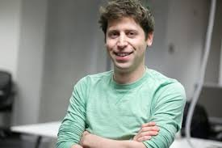
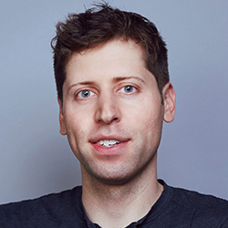

DESCRIPCIÓN
Sam Altman es un empresario y emprendedor tecnológico estadounidense,
conocido principalmente por dirigir OpenAI. También fue presidente de Y Combinator,
una de las aceleradoras de startups más influyentes. Es reconocido por impulsar el
desarrollo de la inteligencia artificial y proyectos tecnológicos de alcance global.

ESTUDIOS
Sam Altman estudió Ciencias de la Computación en Stanford University,
pero dejó la universidad antes de graduarse para dedicarse a emprender.
Carrera:
Fundó Loopt, una aplicación de ubicación social.
Luego fue presidente de Y Combinator, donde apoyó el crecimiento de muchas startups.
En 2015 ayudó a fundar OpenAI.
Desde 2019 es CEO de OpenAI, liderando proyectos de inteligencia artificial como ChatGPT y modelos GPT.